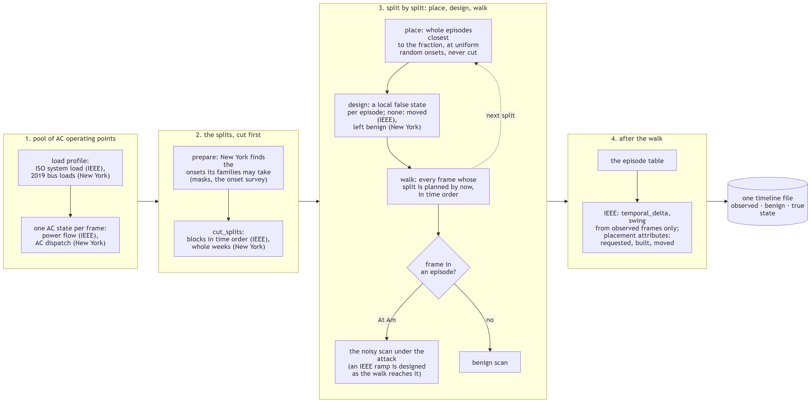

Generate a timeline¶
A timeline is the meter readings of one test system, frame by frame, with attack episodes placed in it. This guide generates one. It is the same guide for every test system: one method makes every timeline, and what differs between systems is settings and data.
Terms are in the glossary. Paths are under src/fdia_graph/.
What you need¶
- A test system. One of the eight IEEE cases, or the New York case (Test systems).
- A pool of operating points. One solved AC state per frame, in time order (Build the operating points).
For an IEEE case fg.generate downloads the released pool, so you need nothing else. For the
New York case you build the pool first.
The steps¶
TimelineSource.generate(out) in generation/source.py makes every timeline. Its body is short,
and it runs these steps in this order.

A source is a subclass of TimelineSource. It builds the generator, the pool and the designer
of its attack families, and it says what its files record. The package has one, in three
spellings.
| Source | File | Built on |
|---|---|---|
SearchSource |
generation/search.py |
a Network and a pool array |
IeeeSource |
generation/ieee.py |
an IEEE case by its name, and its pool array |
SearchSource.for_pool |
generation/search.py |
a Network and a pool file, as the New York case has |
IeeeSource and for_pool build a SearchSource
(The original generator on the New York case).
1. Open¶
Owner: TimelineSource.open, with TimelineWriter (generation/write.py).
The file is started beside out under a .part name. It takes the name out only when it is
whole. A run that fails leaves no file, and a file already at out is left as it was.
The writer stores the static graph first: the branches and what gives the admittance matrix.
2. Cut the splits¶
Owner: TimelineSource.cut_splits, with split_bounds and split_weeks in
generation/plan.py.
The train, validation and test splits are cut before any episode is placed, so no episode is cut
by a split. The setting split_by chooses how.
"time": three blocks in time order."week": whole weeks, drawn at random into the three splits, in strata of 20 weeks (split_weeks). This needs each frame's time.
Just before the cut the source runs prepare. It does nothing on a SearchSource; a subclass
can work out there what it needs before the splits are cut.
3. Place¶
Owner: TimelineSource.place, with place_split in generation/plan.py.
Each split gets whole episodes at random onsets.
- How many. The whole number of episodes whose frames come closest to
attacked_fracof the split. The families share them so that each family gets about the same number of attacked frames (whole_episode_counts,largest_remainder). - Where. Longest first, each at an onset drawn uniformly among the positions where it fits.
Episodes never overlap and none is cut (
uniform_onset). - When it jams. A placement that cannot fit is retried whole 10 times (
PLACE_TRIES). Then one episode of the family that jammed is dropped, recorded, and reported with aRuntimeWarning.
Adjacent episodes and long quiet stretches are outcomes of the uniform draw, not of a rule.
4. Design¶
Owner: TimelineSource.design, with SplitDesign and the source's Designer
(generation/design.py).
The designer asks each family for the episode of a window: what the attacker changes on each
frame (The attack families). An episode with no design at its onset
moves to another free onset of its split, up to 20 times (REDRAWS). After that it is given up,
recorded, and reported with a RuntimeWarning.
On a SearchSource the ramp At is the one family designed as the walk reaches it, because
its design reads the frame before its onset. A ramp with no design therefore moves to a later
onset only (Walk.relocate_later).
The designs of a split can run in several processes (workers). The file does not depend on the
number of workers. The processes are spawned, so a script that asks for more than one worker
must start under if __name__ == "__main__":.
5. Walk¶
Owner: TimelineSource.walk, with Walk.run in generation/emit.py.
Every frame is emitted in time order. A frame outside an episode is a benign scan: the readings
of the pool state plus meter noise (Meters and noise). A frame inside
an episode is that scan plus the attack. A frame of an episode whose own scan cannot be built is
stored benign, and the file counts it in the attribute fallback_benign.
The walk writes a frame only after its split is placed and designed (planned_until in
generation/plan.py). With split_by="time" each split is one block, so the walk writes that
block next. With split_by="week" the weeks of the three splits alternate, so the walk stops
at the first frame whose split is not designed yet.
6. Finish¶
Owner: TimelineSource.finish, with TimelineWriter.finish.
After the last frame the writer stores what the file carries besides its frames: the per-frame
columns, the episode table, the attributes, and the temporal features where the file has them.
The attributes record the settings as JSON (settings) with their hash (settings_hash), and
per split and family the episodes requested, built, moved, dropped and short.
Layers and labels says what each layer means, and
the data dictionary lists every array.
The settings¶
Settings arrive as models from models/config.py. Each model checks its values when it is
built, and a value it does not allow raises ConfigError.
TimelineSettings¶
The settings of a SearchSource, so of every timeline the package generates.
| Field | Default | Meaning |
|---|---|---|
attacked_frac |
0.5 | share of each split's frames under an episode |
families |
("At", "Am") |
the families placed |
am_len |
None |
Am episode length in frames; None is the ramp's |
max_load_mw |
2000.0 | a larger load is never a target; None is off |
workers |
1 | processes that design the Am episodes |
split_by |
"time" |
how the splits are cut |
am_attack |
"overload" |
what an Am episode is; the one kind |
ramp |
RampSettings() |
the slow ramp At |
search |
SearchSettings() |
the attacker's area and the search |
overload |
OverloadSettings() |
the overload Am |
meters |
MeterSettings() |
the meter plan |
split |
SplitSettings() |
the three fractions |
The sections:
| Model | Field | Default | Meaning |
|---|---|---|---|
RampSettings |
rate |
0.002 | At growth per frame |
RampSettings |
length |
60 | At episode length in frames |
RampSettings |
stealth_scale |
1.0 | multiplier on At's stealth bound |
SearchSettings |
hops |
2 | the attacker's reach in branches |
SearchSettings |
min_tamper |
True |
hold each At episode on the fewest devices |
SearchSettings |
min_budget |
256 | candidate supports solved per search |
SearchSettings |
area_rule |
"hops" |
how the attacker's area is chosen |
OverloadSettings |
rating_source |
"pool" |
"pool", "pglib" or "delta" |
OverloadSettings |
rating_margin |
1.25 | rating over the pool's peak flow |
OverloadSettings |
load_cap |
0.5 | largest shown load change, as a share |
OverloadSettings |
n_lines |
2 | lines one episode overloads |
OverloadSettings |
support_method |
"search" |
"search" or "rref" |
OverloadSettings |
rating_delta |
0.10 | with "delta": p.u. added to the target's true flow |
MeterSettings |
vbus_frac |
0.6 | share of buses with a voltmeter |
MeterSettings |
pmu_frac |
0.2 | share of buses with a PMU |
MeterSettings |
flow_frac |
0.9 | share of branches with a flow meter |
MeterSettings |
meter_model |
"hybrid" |
what the meters read |
SplitSettings |
fractions |
(0.6, 0.2, 0.2) |
train, validation, test |
fg.generate and generate_timeline take a TimelineSettings, and also flat keywords that set
one field each. A flat keyword is applied over the settings.
| Flat keyword | Sets |
|---|---|
attacked_frac, families, am_len, max_load_mw, workers, split_by |
the field of that name |
ramp_rate, ramp_len, stealth_scale |
ramp.rate, ramp.length, ramp.stealth_scale |
hops, min_tamper, min_budget |
the search field of that name |
redundancy |
meters (a MeterSettings) |
split |
split (three fractions, or a SplitSettings) |
am_attack |
"overload" sets am_attack; an OverloadSettings sets overload |
seed (default 123) is an argument beside the settings. It fixes the meter plan, the meter
biases and every attack draw.
from fdia_graph.models.config import RampSettings, TimelineSettings
settings = TimelineSettings(
attacked_frac=0.3,
ramp=RampSettings(length=30),
)
print(settings.lengths_for(("At", "Am"))) # {'At': 30, 'Am': 30}
split_by and time=¶
split_by is a setting of every source.
| Value | The splits | Needs |
|---|---|---|
"time" |
three blocks in time order | nothing |
"week" |
whole weeks, drawn into the three splits | each frame's time |
The frames' times are the argument time=: numpy datetime64 values, one per frame, strictly
increasing. Anything else is refused when the source is built. An IEEE pool stores no time, so
an IEEE timeline split by weeks needs time= passed in. A New York pool stores its times.
With times, the file stores data/time, and no episode is placed across a gap in time. Without
them, split_by="week" is refused with a ConfigError that says the pool carries no time.
How a pool's load is read¶
A pool stores one net injection per bus. The search-based designs need the load and the
generation behind it, and loads says how to divide it.
| Value | A bus's injection is read as | For a pool made by |
|---|---|---|
"scaled" (default) |
the case's load and generation, both times one factor | a power flow on a scaled case (the released IEEE pools) |
"net" |
all generation at a bus with a unit, all load at any other bus | an OPF, which sets each unit's output on its own |
Under "net" the load at a unit's own bus is not seen, so the designs never pick it, and a bus
counts as a load only when its mean load over the pool is above 1 MW (LOAD_FLOOR_MW). The
classes are ScaledSplit and NetSplit in engine/physics.py. A file records loads in its
settings when it is not the default.
A design picks its targets among the grid's own buses (Case.own_bus). On an IEEE case that is
every bus. On the New York case it is the 46 New York buses; the other 94 stand for the
neighbouring grids.
What differs between the IEEE cases and the New York case¶
One source generates both. Every row is a difference in data or in a setting. The steps above are the same.
| Item | IEEE cases | New York case |
|---|---|---|
| Case | Case.from_ieee(n), the case pandapower ships |
nygrid_case(), a MATPOWER file in the package |
| Load data | one system load profile scales every bus | a load per bus, from LoadModel |
| Pool solve | one power flow per step, in pandapower | one OPF per frame in Ipopt, then one power flow |
| A step that does not solve | dropped from the pool | kept in the pool, with an empty state; for_pool leaves it out of the timeline |
| Frame times | not stored in the pool | stored in the pool |
loads |
"scaled" |
"net", set by for_pool |
| Buses a design may target | every bus | the 46 New York buses |
| Source | IeeeSource, through fg.generate |
SearchSource.for_pool |
| Released data | a pool and a timeline per system | none; you build both |
The meter placement, the design families, the file layout and the defaults of TimelineSettings
are the same on both. The attack families says what each design does.
The original generator on the New York case¶
The New York case is a test case of SearchSource like an IEEE case: coverage meters, the
search-based ramp and overload, and the settings of TimelineSettings. Reading the case file
needs the [ny] extra. The pool is one you build
(Build the operating points); the repository has a pool of two days
for its tests.
from fdia_graph.data.pool import read_pool
from fdia_graph.generation.search import SearchSource
from fdia_graph.models.config import OverloadSettings, TimelineSettings
from fdia_graph.systems.case import nygrid_case
from fdia_graph.systems.network import Network
net = Network(nygrid_case())
pool = read_pool("tests/nygrid/data/days/pool_2019_v3_days.h5")
am = OverloadSettings(rating_source="delta", load_cap=0.1)
settings = TimelineSettings.of(split_by="week", ramp_len=12, attacked_frac=0.3, am_attack=am)
SearchSource.for_pool(net, pool, settings, seed=5).generate("out/ny_search.h5")
for_pool hands the generator the pool as it reads one: the solved frames only, with their
times, injections positive for load, and loads="net". The file has the layout of an IEEE file:
a flow at the from end, currents as real and imaginary parts, and the two temporal features.
| On this case | |
|---|---|
| Meters | MeterPlan.from_coverage draws them over all 140 buses, the neighbours' included |
| Ramp targets | New York buses with no unit whose mean load in the pool is above 1 MW |
| Overload targets | branches with both ends in New York; the units it may move are New York's |
| A design's area | the buses within hops of its targets, a neighbour's included: such a bus is never a target or a label, but its readings move with the false state |
| Ratings | rating_source="delta" rates a line from its own window; the default rates it at 1.25 times its peak flow in the pool |
tests/nygrid/test_any_case.py runs this on the two checked-in days and checks that every
labelled bus is New York's.
A design family of your own¶
SearchSource, IeeeSource and SearchSource.for_pool take families=, a dictionary from a
family's name to a family object. The object takes the place of the search family of that name,
"At" or "Am". Its episodes are placed like that family's: the name must be in the settings'
families, and the episode length is that name's (ramp_len for "At").
from fdia_graph.generation.ieee import IeeeSource
from fdia_graph.models.config import TimelineSettings
# X: a pool array [T, 14, 4]; MyFamily: a subclass of AttackFamily
settings = TimelineSettings.of(families=("At",), ramp_len=10, attacked_frac=0.3)
source = IeeeSource(14, X, settings, seed=5, families={"At": MyFamily()})
source.generate("out/own.h5")
A family that subclasses AttackFamily (engine/attacks/family.py) designs one attack vector
per window, a value for every meter of the source's plan on every frame
(Add a design family). Such an episode is designed before
its split is walked. The file records it under the code of the family name its Episode
carries. A meter is marked tampered where the vector moves its reading by more than the meter's
accuracy class, and a bus is labelled where a tampered meter sits.
The designs of several workers run in spawned processes, so with workers above 1 the family
object must pickle. tests/test_any_case.py runs a family of its own on IEEE-14.
A timeline read as clients¶
SearchSource and SearchSource.for_pool take own=, an Ownership
(systems/ownership.py): the clients' names and the client of each bus, -1 for a bus that
belongs to none. Each meter then belongs to the client of its bus. The file records the names
in the attribute client_names and each bus's client in graph/bus_client. The designs do not
read the owners, so the attacks are the same with and without them.
import numpy as np
from fdia_graph.systems.ownership import Ownership
# net, pool, settings: as in the New York snippet above
case = net.case
bus_client = np.where(case.is_ny, np.arange(len(case.bus_id)) % 3, -1) # three made-up clients
ties = bus_client[case.f] != bus_client[case.t]
own = Ownership(np.array(["a", "b", "c"]), bus_client, ties)
SearchSource.for_pool(net, pool, settings, seed=5, own=own).generate("out/ny_clients.h5")
assign_clients in systems/ownership.py builds the Ownership of the New York case from the
utility territories and the bus locations among the build's inputs: each New York bus goes to
the utility whose territory holds it.
The file opens with fg.FdiaGraph(path) like any timeline. Dataset (dataset/clients.py) is
a second view of it, by meter and by client:
from fdia_graph.dataset.clients import Dataset
ds = Dataset("out/ny_clients.h5")
a = ds.client("a", split="train")
x = a.node_features() # [T, N_c, 4]
op = ds.operator(split="test") # every meter
A client sees only its own meters and the labels of its own buses. The operator view is the full
scan. ds.clients lists the clients' names.
On a ClientView |
Shape | Holds |
|---|---|---|
z |
[T, M_c] |
its observed scans, one column per meter it owns |
labels |
[T, N_c] |
the attack labels of its buses |
meters |
its rows of the meter table | |
buses |
[N_c] |
the positions of the buses it owns |
frames |
[T] |
the frames selected; a week split has gaps |
node_features() |
[T, N_c, 4] |
voltage, angle, P, Q per bus; NaN where not metered |
temporal() |
[T, M_c] |
the change from the frame before |
On the Dataset |
Holds |
|---|---|
ds.plan |
the meter table, rebuilt from the file's masks (MeterPlan.from_masks) |
ds.z(frames) |
the flat reading vector of that table |
ds.z(frames, benign=True) |
the same scans without the attack |
ds.tampered(frames) |
the tampered meters |
Dataset refuses a file that does not record its clients with NotATimeline.
tests/nygrid/test_dataset.py writes such a file and reads it back.
Entry point: an IEEE case¶
fg.generate loads the pool, generates the timeline and registers the file under a name.
import fdia_graph as fg
# needs fdia-graph[generate]
# downloads the IEEE-14 pool (about 25 MB) once
# about five minutes on a laptop
fg.generate("ieee14", name="my_run", frames=2000)
mine = fg.load("my_run", split="train")
| Argument | Default | Meaning |
|---|---|---|
system |
"ieee14" to "ieee300", or the bus count |
|
name |
the name fg.load finds the file under |
|
frames |
None |
walk only the first frames of the pool; see the note on ratings below |
states |
None |
your own pool: an array or a path |
out |
None |
the file's path; None is <name>.h5 in the cache |
seed |
123 | the seed |
settings |
None |
a TimelineSettings |
time |
None |
each frame's time |
Without states, the pool is the path in $FDIA_GRAPH_INIT when that variable is set, else the
released pool of the system, downloaded once.
frames changes the overload's line ratings. fg.generate cuts the pool to its first frames
states before the source is built. By default (OverloadSettings.rating_source="pool") a branch's
rating is rating_margin times its largest true flow over the pool the source is given, so the
rating is taken over those frames only (Overload.use_line_ratings). Two runs with different
frames can therefore rate the same branch differently. To make the ratings independent of
frames, use rating_source="pglib" (the PGLib-OPF ratings, held for IEEE-14, 118 and 300) or
rating_source="delta" (each target rated from its own window: its true flow at the window's last
snapshot plus rating_delta, in per unit).
Ratings are not the only thing that follows frames. The splits are cut from the number of frames,
so the episodes' places change with it, and the generator limits a false state must keep are widened
to what the given pool ran each generator over. A shorter run is therefore not the first part of a
longer one, under any rating source. Only the benign frames are the same in both.
fg.generate calls generate_timeline in timeline.py, which builds an IeeeSource and calls
its generate. To generate on a grid that is not an IEEE case, build a SearchSource on its
Network (Add a design family, an alarm rule or a test system).
Two measured builds on IEEE-14 follow. The first is the three release recipes at 72,000 frames
(seed 123, experiment generation.split_first; episodes and redraws per family, At / Am).
| dataset | split | frames | attacked | episodes asked | built | redraws | shortfall |
|---|---|---|---|---|---|---|---|
| At | train | 43200 | 0.500 | 360 | 360 | 0 | 0 |
| At | val | 14400 | 0.500 | 120 | 120 | 0 | 0 |
| At | test | 14400 | 0.500 | 120 | 120 | 0 | 0 |
| At | build | 10 min | |||||
| Am | train | 43200 | 0.500 | 360 | 360 | 88 | 0 |
| Am | val | 14400 | 0.496 | 120 | 119 | 32 | 1 |
| Am | test | 14400 | 0.500 | 120 | 120 | 26 | 0 |
| Am | build | 413 min | |||||
| At+Am | train | 43200 | 0.500 | 180 / 180 | 180 / 180 | 0 / 32 | 0 / 0 |
| At+Am | val | 14400 | 0.500 | 60 / 60 | 60 / 60 | 0 / 18 | 0 / 0 |
| At+Am | test | 14400 | 0.500 | 60 / 60 | 60 / 60 | 0 / 15 | 0 / 0 |
| At+Am | build | 234 min |
The overload Am takes most of the time. A split's Am episodes are independent, so
workers=N designs them in N processes and the file is the same for any N. An Am-only IEEE-14
timeline (experiment generation.parallel_design):
| workers (3000 frames) | seconds | speed-up | Am episodes | same file |
|---|---|---|---|---|
| 1 | 754 | 1.0x | 25 | yes |
| 16 | 253 | 3.0x | 25 | yes |
Where the code is¶
| File | Holds |
|---|---|
generation/source.py |
TimelineSource: the steps, written once |
generation/search.py |
SearchSource: coverage meters, search-based designs |
generation/ieee.py |
IeeeSource: a SearchSource for an IEEE case by name |
generation/plan.py |
the splits, the episode counts, the placement |
generation/design.py |
Designer, SplitDesign, the design processes |
generation/emit.py |
Walk: the frames, in time order |
generation/write.py |
TimelineWriter: the one writer of the file |
Every source emits its scans through one generator, FdiaGenerator, in engine/:
| File | Holds |
|---|---|
engine/core.py |
FdiaGenerator: a Network, its meter plan and noise |
engine/base.py |
Part: one job of the generator, a class that holds the generator |
engine/measurement.py |
Emitter: a scan from a stored state |
engine/physics.py |
ScanLoads and LoadSplit: a scan's load and generation, read from its state |
The attack designs are under engine/attacks/
(The attack families).